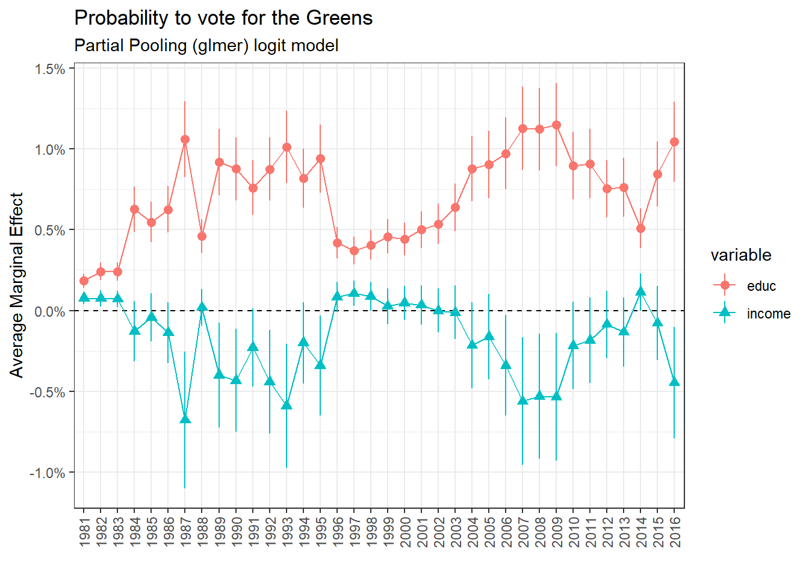

| p02 | n | prop | label |
|---|---|---|---|
| 0 | 5209 | 0.0162681 | PDC+PCS groupés |
| 1 | 760 | 0.0023735 | PCS/CSP |
| 2 | 18345 | 0.0572929 | PDC/CVP |
| 3 | 2589 | 0.0080856 | PEP/EVP |
| 4 | 22144 | 0.0691574 | PRD/FDP |
| 5 | 1280 | 0.0039975 | PdL (PA)/FPS (AP) |
| 6 | 9563 | 0.0298660 | PES/GPS |
| 7 | 2026 | 0.0063274 | AdI/LdU |
| 8 | 1690 | 0.0052780 | Lega |
| 9 | 2839 | 0.0088664 | PLS/LPS |
| 10 | 2007 | 0.0062680 | PdT [POCH, PSA]/PdA [POCH, PSA] |
| 11 | 885 | 0.0027639 | DS (AN)/SD (NA) |
| 12 | 47166 | 0.1473031 | PSS/SPS |
| 13 | 30156 | 0.0941795 | UDC/SVP |
| 14 | 305 | 0.0009525 | FraP |
| 15 | 463 | 0.0014460 | AV/GB |
| 16 | 49 | 0.0001530 | AdG |
| 17 | 320 | 0.0009994 | UDF/EDU |
| 18 | 1521 | 0.0047502 | PBD/BDP |
| 19 | 2413 | 0.0075360 | Verts Libéraux/GLP |
| 20 | 12601 | 0.0393539 | PLR/FDP Die Liberalen |
| 30 | 2819 | 0.0088040 | Autre parti |
| 31 | 12996 | 0.0405875 | Plusieurs partis |
| 32 | 6033 | 0.0188415 | Pas un parti, mais une personne |
| 33 | 102205 | 0.3191941 | Aucun parti |
| NA | 31813 | 0.0993545 | NA |
Political Cleavages and inequality
Introduction and Problématique
How does income inequality affect political cleavages and political conflict? A recent trend in political economy has developed and built a tremendous analysis of the evolution of political cleavages in almost all democratic countries around the world. This interest, whose origin can be traced back to Piketty’s last book (2019), gave rise to the World Political Cleavages and Inequality Database (WPID) and to a book, which analyses the effect of income, social and educational inequality on the structure and transformation of political cleavages from 1948 to 2020 in 50 countries (2021). Why have political cleavages and political conflict become popular among economists such as Piketty, who were originally more focused on inequality analysis? An answer could be the inequality paradox: the fact that rising inequality in almost all developed countries in the world has no paved the way to growing support for left and far-left parties, income and wealth redistribution and for political contest in general. Political economists such as Piketty have spent years studying inequality, how the latter have evolved and can disturb political and economic stability and how they can be reduced to make society more equal and just for everybody. However, whereas the solutions and basic facts are here, political outcomes are not. Political economists have thus realized that the persistence of inequality is not a technical problem, but a political one and that inequality analysis musts thus take politics into account.
It is interesting to note how the same reasoning can be applied to ecology. Ecologists face indeed the same issue: global warming becomes increasingly more threatening, and scholars know how it could be stopped or at least reduced, but there is paradoxically no political outcome and no serious political measure which has been taken despite the emergency.
The work of Piketty and coauthors can be summarized as follows: in the post-war period, political cleavages were bipolar with respectively a left a right bloc. Support for social-democratic parties was negatively correlated with income and education: the lower the income and level of education, the higher the probability to support the left and left economic policies. Conversely, support for right-wing parties was positively linked with income and educational level. Political cleavage was thus “classist” in the sense that the political positioning of an individual was mainly determined by his position in the economic structure.
The situation changed around the 1970s and 1980s: the support for the left has become positively correlated with education whereas the support for the right is still linked positively with income and education. Political cleavages have thus become “multidimensional” by combining an economic cleavage (degree of income and wealth), which has become relatively less salient, with a growing “cultural” cleavage due to the increase in average educational level.
The left has thus become the “brahmin left” because supported by high education voter. The right remains “merchant” because it still is supported by the rich. Finally, a new bloc, the “social-nativist” bloc, gathers voters with low income and low educational level (2019).
Amable and Darcillon -Amable and Darcillon (2022) offer more contrasted results. Income levels are found to be still an important factor in the formation of political preferences in the classic left-right divide. They identify the possible alliance between the most educated and rich groups, giving rise to a bourgeois bloc.
Political cleavages, political conflict and inequality in Switzerland
Switzerland is considered by this literature as the country in which those transformations have been one of the most important. For instance, Durrer de la Sota et al. explain that “Switzerland is the country where the shift of the higher educated towards the left has been the most dramatic” (2021, 4). Switzerland is infamous for being the home of one of the most successful social-nativist party, the SVP which now the first political party in Switzerland. Green parties have also become an important force and they are separated between the liberal ecologists and social ecologists. The important elements of the WPID’s analysis of Switzerland are the following:
The authors used the Swiss Election Studies (Selects) data, which are data collected after each parliamentary election.
The educational shift happened in the late 80s, the period 1983-7 being the last class-based period. Switzerland’s political landscape is now a multi-polar and multi-elite one: the support for the greens and socialists is linked positively with education, the rich still support radical/liberal parties and the SVP represents the social-nativist bloc gathering the low income and low education voters.
The traditional parties, the Socialists (Swiss Socialist Party SSP), the Liberals and Radicals, and the Christian Democrats are in a declining trend, if not collapsing.
The Greens are radical right are the new strong emergent parties, the latter being the most important bloc.
Research questions, hypotheses and empirical strategy
Research question
The present article will test Piketty’s Brahmin left vs Merchant right divide as well as the WPID’s findings on Switzerland. The objective is to explore the following research question:
To what extent is the support for the left linked positively with the level of education and negatively with the level of income
To what extent is the support for right parties linked positively with the level of income
Are there parties for which the support increase with both the level of income and education?
Hypothese
These research questions can be given temporary hypothetical answers:
Brahmin left hypothesis:
- The support for left-wing parties (mostly SSP and the Greens) is linked positively with the level of education, with no clear link with the level of income.
Merchant right hypothesis:
- The support for traditional right-wing parties (Liberal-Radicals, Christian Democrats which have become recenty “the center”) is linked positively with the level of income.
Bourgeois bloc hypothesis
- The support for right-wing parties is linked positively with both the level of income and education.
Data
As previously mentioned, the WPID’s findings for Switzerland are based on Selects data. Since using Selects data would not make great sense, unless a very different and specific methodology is used, I tried my best to find another data source. I have thus found an interesting dataset, the standardized Voxlt surveys, which are post-electoral survey data that were collected after each referendum voting from 1981 to 2016. In those surveys, not only referendum voting decisions were collected, but also information on party identification, left-right positioning and various soc-dem characteristics.
Party identification will obviously be the dependent variable. I create a dummy variable for each party support.
The two main explanatory variable will be income and educational level. On the one hand, the dataset contains the variable “educ” which is a 1-6 point scale variable on the highest achieved level of education of the respondant, 1 being mandatory school and 6 university. I do not here perform any modification on this variable and I will consider it as continuous. Considering this variable as continuous is not a ideal option since the distance between each level is not really the same, but since I will perform complex multilevel models with years as a level and varying slopes for education and income, considering this variable as a factor would make computation very hard and tedious.
On the other hand, the dataset offers two variables for income: “nivmena” and “revenu”.
| educ | n | prop | label |
|---|---|---|---|
| 1 | 44007 | 0.1374373 | Ecole obligatoire |
| 2 | 147792 | 0.4615658 | Apprentissage |
| 3 | 29759 | 0.0929397 | Maturité + école normale |
| 4 | 31534 | 0.0984831 | Formation prof. supérieure |
| 5 | 16599 | 0.0518400 | Haute école spécialisée |
| 6 | 47681 | 0.1489115 | Université + Polytechnique |
| NA | 2825 | 0.0088227 | NA |
On the other hand, the dataset offers two variables for income: “nivmena” and “revenu”. Nivmena, a 4 point scale ordinal variable (in categories), was collected until 1993 and revenu was then collected. the latter is a 5 points scale ordinal income brackets variable.
vox %>%
count(nivmena) %>%
mutate(prop = n/sum(n),
label = as_character(nivmena)) %>%
kable(caption = "Household income level")| nivmena | n | prop | label |
|---|---|---|---|
| 1 | 5515 | 0.0172238 | Elevé |
| 2 | 19126 | 0.0597320 | Moyen supérieur |
| 3 | 35285 | 0.1101978 | Moyen inférieur |
| 4 | 9292 | 0.0290196 | Bas |
| NA | 250979 | 0.7838268 | NA |
vox %>%
count(revenu) %>%
mutate(prop = n/sum(n),
label = as_character(revenu)) %>%
kable(caption = "Income level")| revenu | n | prop | label |
|---|---|---|---|
| 1 | 23419 | 0.0731393 | 3’000.- CHF et moins |
| 2 | 51879 | 0.1620221 | de 3’001 à 5’000.- CHF |
| 3 | 53038 | 0.1656418 | de 5’001 à 7’000.- CHF |
| 4 | 34683 | 0.1083177 | de 7’001 à 9’000.- CHF |
| 5 | 35171 | 0.1098418 | 9’001.- CHF et plus |
| 8 | 13940 | 0.0435357 | nsp |
| NA | 108067 | 0.3375016 | NA |
I made the choice to merge the two variables by recoding the revenu variable so that it fits into the categories of the first variable. I do so by considering the first income bracket as the “low” category, the second as “inferior-middle”, the third and fourth as the “upper-middle” category and the fifth as the “upper” category.
# Two ways to create the income variable
vox <- vox %>%
mutate(income = if_else(revenu == 1 & is.na(nivmena), 4,
if_else(revenu == 2 & is.na(nivmena), 3,
if_else(revenu %in% c(3,4) & is.na(nivmena), 2,
if_else(revenu == 5 & is.na(nivmena), 1,
if_else(is.na(revenu) & annee <= 1993, nivmena, NA))))))
vox$income <- ifelse(vox$income == 4, 1,
ifelse(vox$income == 3, 2,
ifelse(vox$income == 2, 3,
ifelse(vox$income == 1, 4, NA))))Descriptive Statistics


nprcs_ssp <-
vox %>%
split(.$annee_f) %>%
map(~ glm(pss ~ income + educ, data = .x, family = binomial(link = "logit")))
year <- data.frame(year = 1981:2016)
nprcs_ssp %>%
map_df(tidy) %>%
mutate(year = year[rep(seq_len(nrow(year)), each = 3),],
test = if_else(p.value <= 0.05, TRUE, FALSE),
lower = estimate - 1.96*std.error,
upper = estimate + 1.96*std.error) -> nprcs_ssp_results
nprcs_ssp_results %>%
filter(term != "(Intercept)") %>%
ggplot()+
aes(x = estimate, y = factor(year), group = term, color = term)+
geom_vline(xintercept = 0, linetype = "dashed")+
geom_pointrange(aes(xmin = lower, xmax = upper))+
facet_wrap(~term)+
labs(title = "Vote for SSP, log(odds)") regression vote for ssp-1.png)
# computing average marginal effect for each year
ame_income_nprcrs_ssp <-
nprcs_ssp %>%
map(~slopes(.x ,variables = "income")) %>%
map_df(~summarise(.x, ame = mean(estimate),
high = mean(conf.high),
low = mean(conf.low))) %>%
mutate(year = 1981:2016,
variable = "income")
ame_educ_nprcrs_ssp <-
nprcs_ssp %>%
map(~slopes(.x ,variables = "educ")) %>%
map_df(~summarise(.x, ame = mean(estimate),
high = mean(conf.high),
low = mean(conf.low))) %>%
mutate(year = 1981:2016,
variable = "educ")
ame_nprcrs_ssp <- rbind(ame_income_nprcrs_ssp, ame_educ_nprcrs_ssp)nprcrs_ame <- function(regression, variable, sequence){
ame <-
regression %>%
map(~slopes(.x ,variables = {{variable}})) %>%
map_df(~summarise(.x, ame = mean(estimate),
high = mean(conf.high),
low = mean(conf.low))) %>%
mutate(year = {{sequence}},
variable = {{variable}})
print(ame)
}plot_ame_ssp <-
ame_nprcrs_ssp %>%
ggplot()+
aes(y = ame, x = year, color = variable, shape = variable)+
geom_hline(yintercept = 0, linetype = "dashed")+
geom_point()+
geom_line()+
geom_pointrange(aes(ymin = low, ymax = high))+
scale_y_continuous(labels = scales::percent_format())+
labs(title = "Probability to vote for SSP",
subtitle = "Repeated cross-section",
y = "", x = "Average Marginal Effect")
plot_ame_ssp
nprcs_ssp_controls <-
vox %>%
split(.$annee_f) %>%
map(~ glm(pss ~ income + educ + gender + age_cat + married + regionL + religion, data = .x, family = binomial(link = "logit")))
nprcs_ssp_controls_results <-
nprcs_ssp_controls %>%
map_df(tidy) %>%
mutate(
test = if_else(p.value <= 0.05, TRUE, FALSE),
lower = estimate - 1.96*std.error,
upper = estimate + 1.96*std.error)
ame_income_nprcs_ssp_controls <-
nprcs_ssp_controls %>%
map(~slopes(.x ,variables = "income")) %>%
map_df(~summarise(.x, ame = mean(estimate),
high = mean(conf.high),
low = mean(conf.low))) %>%
mutate(year = 1981:2016,
variable = "income")
ame_education_nprcs_ssp_controls <-
nprcs_ssp_controls %>%
map(~slopes(.x ,variables = "educ")) %>%
map_df(~summarise(.x, ame = mean(estimate),
high = mean(conf.high),
low = mean(conf.low))) %>%
mutate(year = 1981:2016,
variable = "educ")
ame_nprcs_ssp_controls <- rbind(ame_income_nprcs_ssp_controls, ame_education_nprcs_ssp_controls)plot_ame_nprcs_ssp_controls <-
ame_nprcs_ssp_controls %>%
ggplot()+
aes(y = ame, x = year, color = variable, shape = variable)+
geom_hline(yintercept = 0, linetype = "dashed")+
geom_point()+
geom_line()+
geom_pointrange(aes(ymin = low, ymax = high))+
scale_y_continuous(labels = scales::percent_format())+
labs(title = "Probability to vote for SSP",
subtitle = "No pooling model, after controls",
y = "", x = "Average Marginal Effect")
plot_ame_nprcs_ssp_controls


Partial pooling for year
glmer_pss <- glmer(data = vox,
formula = pss ~ income + educ + gender + age_cat + married + regionL + religion + (income + educ | annee_f),
family = binomial(link = "logit"))## function to simplify the code
# table ame is for computing the average marginal effect
table_ame <- function(variable, regression, group){
glmer_table <- slopes({{regression}}, variables = {{variable}})
ame <-
glmer_table %>%
group_by({{group}}) %>%
summarise(ame = mean(estimate),
high = mean(conf.high),
low = mean(conf.low)) %>%
ungroup() %>%
mutate(variable = {{variable}})
print(ame)
}# A tibble: 36 × 5
annee_f ame high low variable
<fct> <dbl> <dbl> <dbl> <chr>
1 1981 -0.0855 -0.0719 -0.0991 income
2 1982 -0.0899 -0.0763 -0.104 income
3 1983 -0.0686 -0.0555 -0.0816 income
4 1984 -0.0606 -0.0481 -0.0732 income
5 1985 -0.0413 -0.0310 -0.0517 income
6 1986 -0.0103 -0.00452 -0.0160 income
7 1987 -0.00389 0.00166 -0.00945 income
8 1988 -0.0235 -0.0156 -0.0314 income
9 1989 -0.0197 -0.0130 -0.0265 income
10 1990 -0.0258 -0.0185 -0.0331 income
# ℹ 26 more rows# A tibble: 36 × 5
annee_f ame high low variable
<fct> <dbl> <dbl> <dbl> <chr>
1 1981 0.0302 0.0342 0.0261 educ
2 1982 0.0303 0.0345 0.0261 educ
3 1983 0.0160 0.0198 0.0122 educ
4 1984 0.0131 0.0168 0.00938 educ
5 1985 0.00565 0.00859 0.00272 educ
6 1986 0.0150 0.0172 0.0129 educ
7 1987 0.0131 0.0152 0.0109 educ
8 1988 0.00923 0.0116 0.00689 educ
9 1989 0.00878 0.0108 0.00677 educ
10 1990 0.0155 0.0178 0.0133 educ
# ℹ 26 more rows

glmer_plr <- glmer(data = vox,
formula = plr ~ income + educ + gender + age_cat + married + regionL + religion + (income + educ | annee_f),
family = binomial(link = "logit"))# A tibble: 36 × 5
annee_f ame high low variable
<fct> <dbl> <dbl> <dbl> <chr>
1 1981 0.0743 0.0831 0.0654 income
2 1982 0.0721 0.0809 0.0633 income
3 1983 0.0747 0.0837 0.0657 income
4 1984 0.0699 0.0785 0.0613 income
5 1985 0.0610 0.0689 0.0531 income
6 1986 0.0245 0.0291 0.0198 income
7 1987 0.0367 0.0425 0.0310 income
8 1988 0.0551 0.0626 0.0476 income
9 1989 0.0457 0.0524 0.0391 income
10 1990 0.0361 0.0419 0.0304 income
# ℹ 26 more rows# A tibble: 36 × 5
annee_f ame high low variable
<fct> <dbl> <dbl> <dbl> <chr>
1 1981 0.00338 0.00800 -0.00124 educ
2 1982 0.00274 0.00750 -0.00201 educ
3 1983 0.00700 0.0113 0.00266 educ
4 1984 0.0248 0.0296 0.0200 educ
5 1985 0.0175 0.0209 0.0141 educ
6 1986 0.00741 0.00994 0.00488 educ
7 1987 0.0119 0.0146 0.00920 educ
8 1988 0.0107 0.0140 0.00745 educ
9 1989 0.00204 0.00505 -0.000964 educ
10 1990 0.00603 0.00856 0.00349 educ
# ℹ 26 more rows
References
Amable, Bruno, and Thibault Darcillon. 2022. “Brahmin Left Versus Merchant Right. How Useful Is This Distinction for the Analysis of Political Divides in Western Democracies?” Political Economy Working Papers.
Durrer de la Sota, Carmen, Amory Gethin, and Clara Martinez-Toledano. 2021. “Party System Transformation and the Structure of Political Cleavages in Austria, Belgium, the Netherlands and Switzerland, 1967-2019.” World Inequality Lab – Working Paper, no. 2021. https://wid.world/wp-content/uploads/2021/03/WorldInequalityLab_WP2021_08_PoliticalCleavages_AustriaBelgiumNLSwitzerland.pdf.
Gethin, Armory, Clara Martinez-Toledano, and Thomas Piketty. 2021. Political Cleavages and Social Inequalities a Study of Fifty Democracies, 1948–2020. Harvard Univeristy Press.
Piketty, Thomas. 2019. Capital Et Idéologie. Le Seuil.